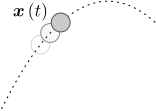
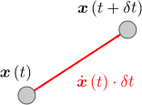
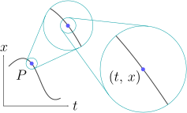
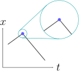
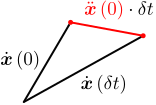
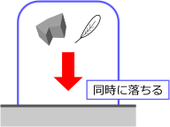
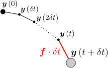

「投げられたボールが
秒後に、どの位置
にあるか」が知りたい。
ボールの運動 は、初期値()と運動方程式から計算できる

キャッチボールをしている時、ボールの運動（あるいは軌跡）は投げるたびに異なったものとなるわけだが、注目すべきことに、同じ投げ方をすればボールの運動は毎回同じになる。これは、初期値（＝投げ方）を決めれば、その後の任意の時刻
におけるボールの位置
が一意的に決まるということである。従って、初期値から
を決める法則（運動方程式という）が存在することになる。以上により、ボールの運動
を計算するには、2つの項目：
同じ投げ方とは何かを明らかにする運動方程式を導出する
必要であることが分かる。
項目()については、経験的に分かるだろう。即ち、ボールの運動を一意的に決めるには
ボールをどの位置から投げるかどの方向に投げるかどれくらいの速さで投げるか
を固定すればよい。ただし、「どの位置から」とか「どの方向に」といった表現は感覚的すぎる。何らかの計算を行うためには、これらを0や1.5といった数字で表す（＝定量化する）必要がある。
そこでこの章では、以下の3つの節に分けて議論する：
初期値の定量化運動方程式の導出ボールの運動の計算
なお、実際には、風やボールの回転による影響があるため、初期値()だけではボールの運動が確定しない。しかしここではそれらの影響は無視できるとする（例えば十分に重いボールを考える）。
1.1初期値()の定量化
この節では、初期値()の定量化を行う。「どこから投げるか」は位置ベクトル()で表され、残りの2つ「方向と速さ」は速度ベクトル()で表されることになる。これらを決めれば、その後の運動は一意的に決まる。
「どこから投げるか」は、デカルト座標で表す：式()
まず、初期値()の1つ目「どこから投げるか」である。これは単に、
でのボールの位置
である。従って、ボールの位置を定量化する方法を与えればよい。それには、慣れ親しんだデカルト座標を使えばよいだろう。即ち、右図のように、ボールの位置
を、「原点
から
軸方向に
、
軸方向に
、
軸方向に
」という三つ組：
によって表すわけである。（あらかじめ「原点
」と「
軸」を適当に取っておく。ベクトルはこの
のように太字で表す。）
この章の冒頭でも、投げてから
秒後のボールの位置を
と書いていたが、以降では、デカルト座標で表されているとする。すると、問題の「ボールをどこから投げるか」は、デカルト座標により
と表すことができる。
「投げる方向と速さ」は、速度ベクトル()で表される
次は、初期値()の残りの2つ「投げる方向と速さ」を定量化する方法である。投げる「方向」については、その方向を向くベクトルで表現できそうだが、「速さ」については自明ではない。注目するのは、ボールの運動方向や速さを知るには、ごく短い間だけでも、ボールの運動を観察しなければならないという事実である。これは例えば、ボールの写真を見てその運動方向や速さを知ろうとする時、1枚の写真だけでは駄目で、連続する複数の写真が必要となることからも分かるだろう。連続する写真（右図）における「位置の変化の方向」から運動の方向が、「位置のとびの大きさ」から速さが分かる。従って、短時間の観察で得られる情報の中に、「投げる方向と速さ」が含まれているはずである。
そこで、上図のように、時刻
から
秒だけボールの位置を測定した時に、どのような情報が得られるかを考える。
は非常に小さいとする。
は非常に小さいので、
は、
の1次関数として近似できる：（以下の【1.1-注1】の式()）
（
は1次近似であることを示す。
は
を
で微分したものである。）この式()により、
秒後のボールの位置
は、右辺にある2つの量
と
から決まることが分かる。
は元のボールの位置なので、
を測定することで新たに得られる情報は、もう一方の
の値そのものということになる。よって、「投げる方向と速さ」は、
に含まれているはずである。

そこで、
がどのような量なのか、詳しく見てみよう。まず、上式()の赤字部分は、
秒間にボールが
からどれだけ移動したかを表すベクトルなので（右図の赤矢印部分）、その大きさ
は、「
秒間での移動距離」である。よって、公式「速さ・時間=移動距離」と見比べれば、ベクトルの大きさ
は、時刻
でのボールの速さに等しい。一方、
の向きは、明らかにボールの運動方向に等しい。つまり、
は、「ボールの運動方向を向き、大きさが運動の速さに一致するベクトル」であり、まさに「運動の方向と速さ」を過不足なく持っているベクトルである。この
を速度ベクトル（あるいは単に速度）という。
以上により、「投げる方向と速さ」は、
における速度ベクトル：
で表されることになる。
【1.1-注1】関数の1次近似：式()，式()

変数
の任意の関数
に対し、
グラフを描いてみる。このグラフ上の任意の1点
の近傍を拡大していくと、右図のように、直線に近づいていく[1]。直線は1次関数で表すことができるので、この近似直線（＝接線）は、以下のように書ける[2]：
（
を固定した時に、
の1次関数で近似できるということである。
の時には両辺が完全に一致する。）この式()を1次近似と言い、
は1次近似であることを表す。
の係数
は、点
における接線の傾きなので、
の微分に等しい：
ベクトル値関数
についても、成分ごとに上式()を適用すれば、1次近似できる：
は、
の各成分を微分したものである。
補足

[1] グラフ曲線が三角定規の角のように角ばっている場合には（右図）、その点の付近をいくら拡大していっても、角ばったままで直線に近づかない。従って、その点では1次近似はできない。このようなことが起きるのは、「壁と衝突するボールの運動」の軌跡のように、瞬間的に運動の向きが変わる場合である。キャッチボールの運動の場合、このような角ばった軌道にはならないので、常に1次近似できる。
[2] 式()において、
の変化
を使って書けば
となる。即ち、
が
に比例し、その係数が微分となる。（両辺を
で割って
の極限を取れば、微分の定義そのものである。）
1.2運動方程式の導出
この節では、（初期位置
と初期速度
が与えられた後の）ボールの運動
を実際に決める法則、即ち、運動方程式()を導く。
ボールの運動は、加速度ベクトル()によって決まる
前節で述べたように、初期位置
と初期速度
を与えれば、ボールの運動
が一意的に決まる。ということは、実際にその運動を決める何らかの法則が背後にあるはずである。従って次にすべきことは、それがどのような法則なのか、具体的に書下すことである。

まず、
の値は任意なのだから、非常に小さな時刻
を考えてみよう。そうすれば、前節のように1次近似が使える。
における
を1次近似すると、式()と同様に、それぞれ以下のようになる：
が初期値として与えられている状況を考えているので、右辺の未知数は
のみである。
は、速度ベクトル
の時間微分、即ち、速度の変化率（＝微小時間間隔
を掛けたものが、
秒間での速度の変化量になるような量）である。速度の変化と加速度の関係は右図のようになる。
を、加速度ベクトル（または単に加速度）と言う。
式()を使って位置・速度の時刻を
だけ進めるには、加速度
が分かればよいわけだが、それ以降の時刻についても、同様の議論が使える。例えば、
での値
を初期値と見なせば、次の
秒後の値
が同様に決まる。その際必要なのは、時刻
における加速度
である。同様の議論を続けていくことにより、各時刻での加速度
が分かれば、任意の時刻でのボールの位置が決まっていくことになる。よって結局、ボールの運動を決めるのに必要な量は、任意の時刻
における加速度
ということになる。投げられたボールの速度は、重力によって変化していくのだから、キャッチボールでの運動の法則が、速度の変化を与えるものになるのは自然だろう。
キャッチボールの運動方程式：式()
後は、加速度
を決定するだけである。それには実験を行う必要がある。様々な初期値・時刻で
を測定し、
がどのような法則に従うかを見出せばよい。
の値を実験から求めるには、短い時間間隔で位置
をで複数回測定し、1次近似の式を使えばよい（以下の【1.2-注1】）。
そのような測定を行った結果、
は、ある一定の値
となることが知られている（以下の【1.2-注2】）。よって、初期値が与えられた後に、キャッチボールの運動を決定する法則は
である。これが求めたかった運動方程式である。ボールの運動は様々なものが可能だが、全てこの単純な式に支配されているのである。投げ方による運動の違いは、初期値が異なることに起因する。
以上により、初期値
が与えられれば、運動方程式()によって、任意の時刻
でのボールの位置
が決まることになる。
【1.2-注1】加速度ベクトル の測定
3つの時刻での位置ベクトル
を測定する（
はなるべく小さな値）。これらの測定値から
を求めたい。まず、速度ベクトル
は、以下のように決まる：（式()を
の形に変形したもの）
これらを用いて、加速度ベクトル
も決まる：
補足
実際には、
で測定した式()よりも、
での値を用いた以下の式のほうが精度は良い（中心差分という）：
【1.2-注2】重力加速度
放り投げられた物体は、その物体が何であるかによらず[1]、一定の加速度
を受ける。その値は、鉛直下向きで大きさが約
である[2]。成分で書くと
となる（
軸方向を上向きに取っている）。
を重力加速度という。
補足

[1] 物体の重さにも依存しないことに注意。これをガリレイの等価原理と言う。羽はゆっくり落ちるし、ヘリウム風船は逆に浮き上がってしまうので、ガリレイの等価原理が成り立っていないように直感的には見えるが、これは空気抵抗や空気の浮力のためであり、真空中であれば石などと同じように落ちる。もし重いほうが早く落ちるのであれば、2つの物体を別々に落とすよりも、接着剤でくっつけて落としたほうが早く落ちることになり、なんとなく不自然ではある（手をつないで飛び降りたほうが早く落ちる！？）。
[2]
がこの値を取るのは、地球上での話である（地球上であっても場所によって0.5%程度の違いがある）。例えば、月の上だともっと小さな値になるし、星から遠く離れた重力の働かない宇宙空間だと
になるだろう。
1.3運動方程式()の解
この節では、まず、運動方程式()：（再掲）
のような微分方程式を解くための一般的な方法である「数値的な解法」（＝コンピュータを用いた近似的な解法）について説明する。その後、式()の「解析的な解」（＝数学的に厳密な解）についても述べる。
数値解
運動方程式
を数値的に解くには、上述の式()を使って逐次的に計算を進めていけばよい。即ち、以下の漸化式：（
を1つのベクトルにまとめた）
を用いて、
から始めて
ずつ進めていけばよい。これは、オイラー法と呼ばれる計算手法である（以下の【1.3-注1】）。
実際に数値計算を行うと、右図のようになる。グリッドの間隔は
である。
【1.3-注1】1階正規形の微分方程式()の解法：オイラー法
未知関数
に対する以下の形の微分方程式を、1階正規形の微分方程式と呼ぶ：
は既知の関数である[1]。多くの微分方程式がこの形に変形できる[2]。「1階」は
についての1階微分方程式であることを意味し、「正規形」は
の形になっていることを意味する。

初期値
が与えられた時、上式()により、任意の時刻での
が決まる。これを数値的に計算するには、1次近似：
を漸化式として扱うことにより、非常に小さな時間間隔
ずつ時刻を進めていけばよい（右図）。この計算手法を、オイラー法という[3]。
補足
[1] 関数
は
に依存していてもよい：
。その場合、
の関数形が
とともに変化することになる。オイラー法()は、単に以下のようになる：
[2] 運動方程式
は2階の微分方程式であるが、以下のように1階の正規形に変形できる：
赤字部分を
とおき、右辺を
とおけば、
となるので、確かに1階の正規形になっている。これにオイラー法()を適用したものが、式()である。
[3] オイラー法は単純で分かりやすい解法ではあるが、
を相当小さくしなければ誤差が十分減らない。しかし一方、
を小さくしすぎると、計算量が増大することに加え、丸め誤差が問題になる。丸め誤差とは、コンピュータ上では実数が有限の精度しか持たないことによる誤差であり、例えば精度が15桁の場合、
は
に丸められてしまい変化しなくなる（
が小さすぎる場合の式()の右辺に対応する）。これらのため実用上は、オイラー法()のように
の1次関数で近似するのではなく、より高次の多項式で近似する方法がとられる。特に、4次のルンゲ・クッタ法と呼ばれるものがよく使われ、本サイトのシミュレーションでも使用しているが、説明は割愛する。
解析解：式()
運動方程式
の解
は、解析的に示すこともできる。実際、初期値
をそれぞれ
と書くことにして、以下のようになる：
これは確かに、
において
および
が成立し、任意の
において運動方程式
を満たしている。
導出方法について簡単に触れておく。まず、運動方程式
より、
を2階微分すると定数
になるのだから、
は
の2次関数になるはずである。即ち、ある定数
が存在して
と書ける。後は、初期値
と運動方程式
に代入して得られる1次方程式を解けば、
が決まって解()が得られる。